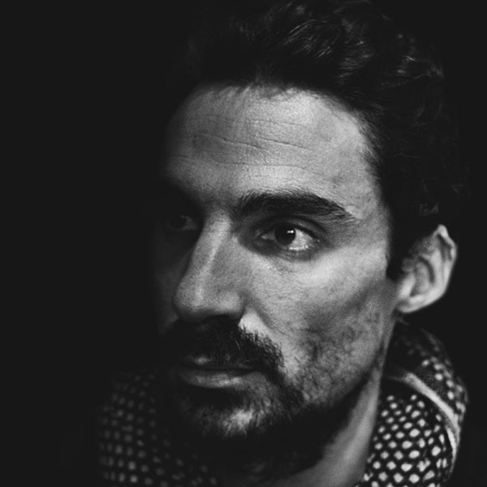

|  | Digital garden de MathieuJe suis Mathieu ! Je suis Mathieu ! Je suis Mathieu ! Je suis Mathieu ! Je suis Mathieu ! Je suis Mathieu ! Je suis Mathieu ! |
202205152003 - (DOSSIER) Les leviers pour décarbonater l’économie française selon le Shift Project
202205140024 - L’empreinte carbone des réseaux sociaux sur smartphone
202205132337 - L’empreinte environnementale du numérique en France
202205121650 - Le Shift Projet propose un scénario bas carbone pour le transport
202205091626 - La sobriété énergétique est boudée par les politiques
202205091612 - Les verrous socio-techniques sont un frein pour la transition écologique
202204241557 - Conseils pour commencer à écrire de manière consistante